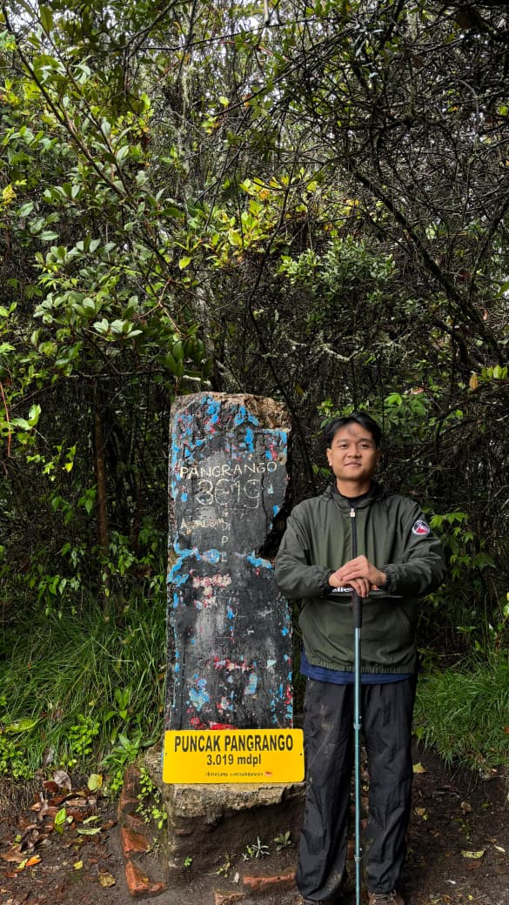
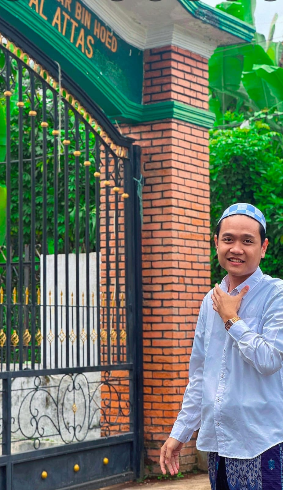

Muhammad Dinnu
| NIM | : (0110226079) |
| Tempat, Tgl Lahir | : (Depok 23 januari 2007) |
| Program Studi | : Teknik Informatika |
| Kampus | : STT-NF |
| Alamat | : (Jl.h.iming Rt 03 RW 17 Beji Depok) |
| : mdinu2301@.com | |
| Telepon | : (081401850520) |
Tentang Saya
Halo, nama saya Muhammad Dinnu, mahasiswa Teknik Informatika di STT-NF. Saya tertarik pada pengembangan web dan desain antarmuka yang rapi serta mudah digunakan.
Saat ini saya sedang belajar HTML, CSS, dan layout halaman web. Ke depan saya ingin mendalami pemrograman web dan UI/UX agar dapat membuat aplikasi yang bermanfaat.
Multimedia



